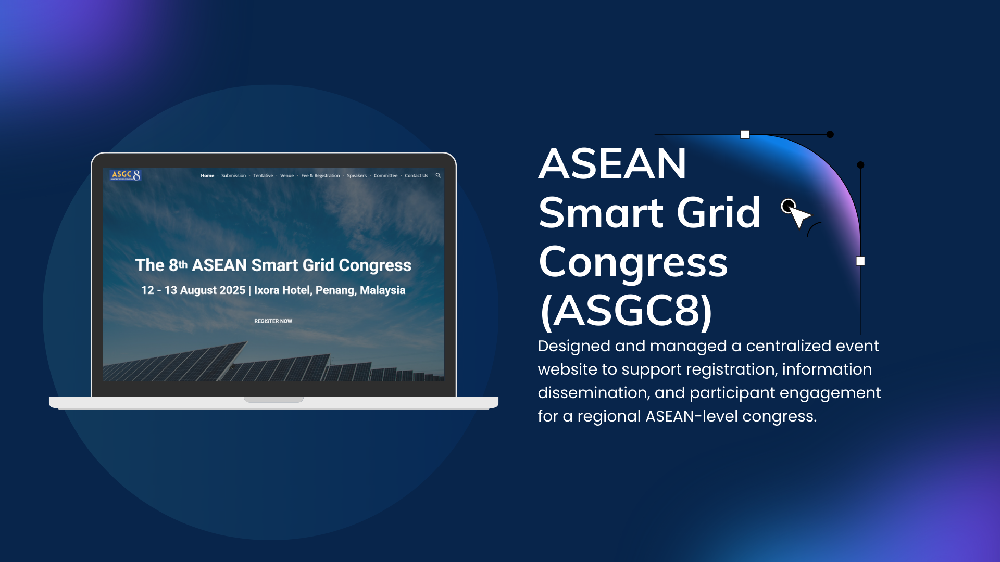

ASEAN Smart Grid Congress (ASGC8)
Official Website for ASGC8 UiTM
🎯Goal / Problem Statement
The ASGC8 website was developed to provide a centralized platform for event registration, information dissemination, and participant engagement for the ASEAN Smart Grid Congress hosted by UiTM. The goal was to improve accessibility, user experience, and visibility of the event through a professional, mobile-friendly web interface.
⚙️ Tools / Tech Stack
- Google Sites (CMS)
- Google Forms (Registration)
- Canva / Figma (UI Mockups)
- Custom HTML Embeds
👩💻 My Role / What I Did
- Designed the site structure and content layout for multiple pages
- Integrated registration and submission forms via Google Forms
- Created consistent branding with event visuals and logos
- Coordinated content updates with event committee